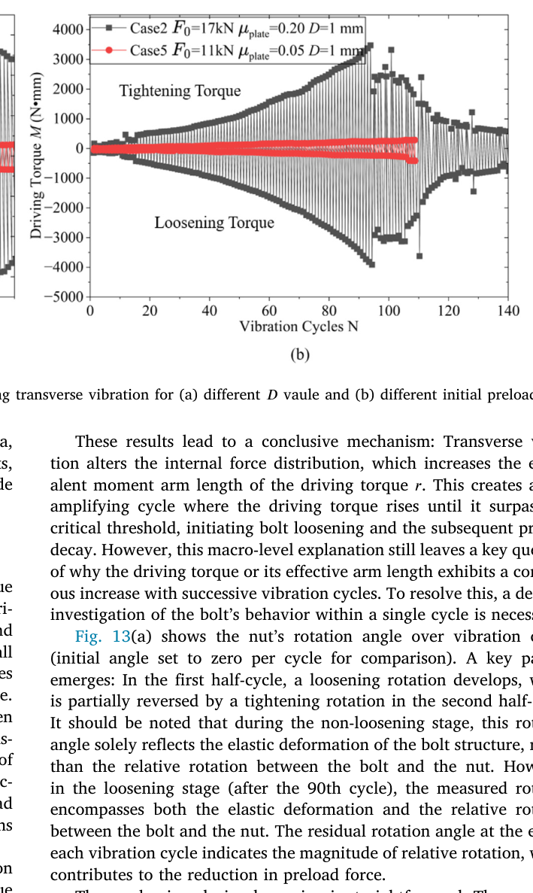
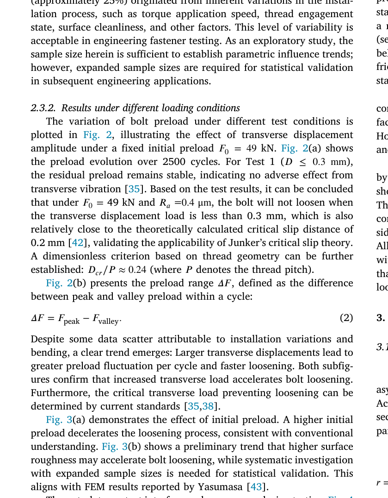

Chu 2026 — estudo de caso— case study
Figura do artigoPaper figure


Figura(s) originais do artigo (recorte do PDF) — a fonte dos pontos que foram digitalizados.Original figure(s) from the paper (PDF crop) — the source of the digitized points.
Condições do ensaioTest conditions
| ReferênciaReference | Chu et al. (2026). Tribology Int. 223:112193 · doi:10.1016/j.triboint.2026.112193 |
| ParafusoBolt | M10x1.5 |
| Pré-carga F0Preload F0 | 49–73 kN |
| AmplitudeAmplitude | ±0.30–1.00 mm |
| FrequênciaFrequency | 10 Hz |
| Família / nº de curvasFamily / curves | transverse · 9 |
| MAE medianomedian | 0.080 |
Informações do artigo — aparato, corpo-de-prova, matriz de ensaiosPaper information — apparatus, specimen, test matrix
Chu, Liu, Qin, Yuan (2026) — Tribological characterization of loosening mechanisms in bolt-fastened structures under transverse vibrations
Citation + DOI
Zhijiang Chu, Yujing Liu, Shiyong Qin, Huang Yuan. "Tribological characterization of loosening mechanisms in bolt-fastened structures under transverse vibrations." *Tribology International* 223 (2026) 112193. DOI: 10.1016/j.triboint.2026.112193. Affiliations: Tsinghua University, School of Aerospace Engineering (a); AECC Sichuan Gas Turbine Establishment (b). Corresponding author: Huang Yuan (yuan.huang@tsinghua.edu.cn). Received 2026-02-01, accepted 2026-05-15, online 2026-05-20. Funded by China's National Major S&T Projects (HT-J2022-IV-0011-0025).
Gap tag(s) + why
- **Transverse core (critical-displacement threshold
s_crit, F0-dependent — like
Bauer2024). The paper's headline experimental result is a critical transverse displacement amplitude D_cr below which the joint never loosens (Test 1, D=0.3 mm, "no decrease" over 2500 cycles), and this threshold is explicitly stated to depend on both** initial preload F0 and the nut-plate friction coefficient. A dimensionless form is proposed: D_cr/P ≈ 0.24 (P = thread pitch), close to Junker's theoretical critical-slip distance (0.2 mm) for this geometry. This directly targets BAS V2's slip_onset_gate/incubation mechanism and the open item of an F0-dependent critical amplitude.
- Friction/wear coupling to preload decay (relevant to BAS V2 surface-damage
D
modulating μ and amplifying wear). Section 2.3.2/Fig. 5: the nut-plate friction coefficient μ_plate is *not* held constant — it rises monotonically with cycles (attributed to progressive wear/surface deterioration) and its evolution is shown to mediate how initial preload F0 regulates the long-term loosening rate (higher F0 → slower μ_plate rise → slower loosening). This is an unusually direct, quantified analogue of BAS V2's surface_damage D → mu_bearing_eff coupling, complete with a measured (not assumed) μ(N) curve per test (Fig. 5), though those curves were not digitized here (out of the F/F0-vs-cycle scope of this task) — flagged as a strong candidate for a follow-up digitization pass if μ(N) calibration data is needed.
Rig / apparatus
- Machine: Junker-type transverse-vibration tester (schematic = paper's Fig. 1),
per ISO 16130 (aerospace dynamic locking-behavior test under transverse loading) and cross-referenced to GB/T 10431-2008 (Chinese national transverse-vibration test method) and HB 6712 (Chinese aviation industry guideline used to select test parameters). An eccentric wheel imposes a periodic transverse motion on the clamped plate.
- Loading direction: purely transverse (shear) — the eccentric wheel drives the
plate sideways relative to the bolt axis; no axial cyclic load is applied.
- Control mode: DISPLACEMENT-controlled (Junker-type), confirmed. Table 1's swept
variable is the transverse displacement amplitude D (mm) — the prescribed input — not a transverse force amplitude. Integrated force *and* displacement sensors record data; the transverse force (and the nut-plate friction coefficient derived from it, Eq. 1) is a measured output, not the control variable. This matches BAS V2's delta_amp displacement-controlled mode (step_cycle(..., delta_amp=...)), not the legacy force-controlled path.
- Preload measurement: integrated force sensor in the test rig; preload is
monitored continuously through the tightening step and the vibration step. Because the tests are explicitly stated to be *comparative* (no absolute quantitative metric asserted), all results are reported as normalized preload F/F0, and the paper analyzes the cycle-averaged preload (large intra-cycle fluctuation is smoothed by averaging per cycle) — see "Experimental nuances" below.
- Frequency: fixed at 10 Hz for all experimental tests (average transverse
velocity ≈ 10 mm/s). The paper notes real aero-engine rotor frequencies far exceed what the Junker tester can reach, and cites prior work [ref 28 in paper] that frequency has a *less pronounced* effect on loosening than amplitude/preload — used to justify the single fixed test frequency.
- Tightening method: turn-of-nut, torque applied via the machine itself until the
measured preload reaches the target F0 (not a torque-controlled tightening spec).
- Friction coefficient determination: thread friction
μ_threadis **not measured
directly — it is back-derived from the empirical torque-preload formula T = F·(P/2π + d2·μ_thread/(2cos β) + μ_plate·r_b) combined with handbook data (HB/Z 251-93 handbook: μ≈0.08) and FEM-tightening-simulation matching (μ_thread ≈ 0.05-0.07 gave torque-slope errors <10%; 0.05 was adopted for FEM runs to save compute). Nut-plate friction μ_plate is derived per-cycle from measured data via Eq. (1): μ_plate = (R_max − R_min)/(2F), where R_max/R_min are the (signed) peak transverse reaction forces in a cycle and F is that cycle's average preload — i.e. μ_plate is a measured, evolving** output, explicitly *not* assumed constant (unlike in the companion FEM, Section 3, where it IS held constant per run for tractability).
Specimen / materials
- Bolt: MJ10 (aerospace J-series thread form, controlled root radius),
material GH159 (Ni-based superalloy, Chinese aerospace designation).
- Nut: 12-point MJ10 nut, material GH4169 (≈Inconel 718 equivalent).
Internal threads silver-coated specifically to reduce the thread-contact friction coefficient (separate from — and lower-friction than — the nut-plate bearing interface).
- Clamped member: a single surface-treated plate, also GH4169, acting as the
"washer"/bearing surface against the nut. No separate flat washer and no anti-loosening device were used — direct nut-on-plate bearing contact.
- Two tribological interfaces: (1) bolt-nut thread contact (silver-coated,
μ_thread ≈ 0.05-0.07); (2) nut-plate bearing contact (uncoated GH4169-on-GH4169, higher and *evolving* COF — this is the interface the paper identifies as tribologically dominant for loosening).
- Surface finish: Ra = 0.4 μm baseline (Tests 1-8); Ra = 1.6 μm rougher variant
(Test 9 only, isolating the roughness effect against the Test 3 baseline at matched D=0.5 mm, F0=49 kN).
- Lubrication: none beyond the silver thread coating; nut-plate interface is dry.
- Geometry (for reference, VDI 2230 pressure check): bearing OD
d_w=17 mm, hole
d_h=10.5 mm → contact area A=π/4·(d_w²−d_h²); at the max test load F0=73 kN this gives p_max ≈ 520 MPa (stated as within safety margin).
- Note — FEM geometry differs from the test article: the companion 3D FEM
(Section 3, not digitized — see below) uses generic M10 bolt/nut/plate dimensions (P=1.25 mm, D0=10 mm, l=38.75 mm, etc., linear-elastic E=189 GPa, ν=0.3) rather than the exact MJ10/GH159/GH4169 test-article properties — a simplification the authors flag is adequate for illustrating the *mechanism* (asymmetric shear/torque accumulation) but not for exact quantitative reproduction.
Test matrix (experimental, Table 1 of the paper)
Fixed unless swept: Ra = 0.4 μm, frequency = 10 Hz, µ_thread ≈ 0.05-0.07 (not swept).
| Test | D (mm) | F0 (kN) | Ra (μm) | Cycles to F=0.9·F0 (paper's Table 1) |
|---|---|---|---|---|
| 1 | 0.3 | 49 | 0.4 | no decrease (2500 cycles run, stable) |
| 2 | 0.4 | 49 | 0.4 | 278 |
| 3 | 0.5 | 49 | 0.4 | 325 |
| 4 | 0.7 | 49 | 0.4 | 406 |
| 5 | 1.0 | 49 | 0.4 | 72 |
| 6 | 1.0 | 49 | 0.4 | 54 (repeat of Test 5 — demonstrates ≈25% installation scatter) |
| 7 | 0.4 | 61 | 0.4 | 1050 |
| 8 | 0.4 | 73 | 0.4 | 936 |
| 9 | 0.5 | 49 | 1.6 | 180 |
Swept variables across the 9 tests: transverse displacement amplitude D (Tests 1-6, F0 fixed @ 49 kN — Fig. 2), initial preload F0 (Tests 2, 7, 8, D fixed @ 0.4 mm — Fig. 3a), surface roughness Ra (Tests 3, 9, D fixed @ 0.5 mm, F0 fixed @ 49 kN — Fig. 3b). Note Tests 2 and 3 each appear in two figures (once in the D-sweep of Fig. 2, once again as the Ra=0.4/F0=49 baseline in Fig. 3a/3b respectively) — same physical test, reused for two different comparisons.
9 curves total, all F/F0-vs-cycle, all experimental (no FEM curve digitized — see below). Failure/stopping criterion: authors define loosening as residual preload ≤ 90% of F0 (DIN 25201-4 Annex B.5.4-inspired; that standard actually calls for running to either full preload loss or 2000 cycles — the max cycle count actually reached across these 9 tests exceeds 2000, e.g. Test 7/8 run to ~4000 cycles).
A separate FEM parameter matrix (Table 2, 9 cases) sweeps D, F0, μ_thread, μ_plate at reduced/idealized preloads (F0 = 11-49 kN, several with F0 far below the experimental 49-73 kN range, chosen purely to make the FEM loosening transient observable within ~100 cycles of compute) — this table is FEM-only, not experimental, and not digitized.
Experimental nuances
- Displacement-controlled, not force-controlled (see Rig section) — the eccentric
wheel imposes D directly; transverse force and μ_plate are measured responses.
- Cycle-averaged preload: "due to the significant fluctuation of bolt preload
within a single cycle, the average preload value per cycle is used for analysis." All digitized F/F0 curves are therefore per-cycle averages, not instantaneous/peak values. A separate quantity, ΔF = F_peak − F_valley (Fig. 2b, NOT digitized — see caveats), captures the intra-cycle swing.
- ~25% scatter in cycles-to-90%F0 is explicitly reported as normal installation
variability (torque-application speed, thread engagement state, surface cleanliness) — Tests 5 & 6 are an intentional repeat pair demonstrating this; the paper argues the *between-condition* differences are still larger than this scatter, supporting the parametric trends, but a single repeat pair is a thin statistical base (paper's own caveat: "expanded sample sizes are required for statistical validation").
- μ_plate is not constant and rises monotonically with cycling in every test
shown in Fig. 5 (not digitized), attributed to progressive wear/surface deterioration; once loosening ceases (preload stabilizes) μ_plate also plateaus. Higher F0 delays both the preload loss AND the μ_plate rise — i.e. F0's effect on loosening rate is mediated through friction evolution, not just a "more load needed" argument.
- Two distinct high-D FEM regimes (Section 3.2.2, FEM only): at low transverse
load, friction dominates the preload-fluctuation waveform shape; at high transverse load, the applied displacement itself dominates the fluctuation amplitude — i.e. the controlling physics genuinely changes character with D. Not itself a digitized curve, but useful context for why D shows a strongly nonlinear (thresholded) effect rather than a smooth one.
- Cross-check anomaly found during digitization (see caveats): Table 1's
tabulated "cycles to 0.9F0" values do not always exactly match the crossing point read off the corresponding *plotted* curves — most notably Tests 5 vs 6 (Table 1 says Test 6 should cross first, at 54 vs 72 cycles; the plotted Fig. 2a curves show the opposite order — Test 5/red visibly drops faster/crosses first). Legend color-to-test assignment was independently re-verified against a zoomed crop of the legend box itself (colors are unambiguous), so this is a genuine Table-vs-Figure inconsistency in the source paper, not a digitization error.
Main conclusions (paper's own summary)
1. Cumulative asymmetric loosening torque is the dominant loosening mechanism under transverse vibration — generated by asymmetric shear-stress redistribution at the nut-plate interface (traced by FEM to the bolt/nut's inherent structural asymmetry, e.g. the thread helix angle breaking left/right symmetry). This explains the *existence* of a critical transverse-displacement threshold as a torque-accumulation-rate argument, not merely a "not enough slip to move the nut" argument. 2. Nonlinear torque-preload-cycle correlation replaces the traditional linear torque-preload model: under transverse vibration the loosening torque M⁻ follows an empirical M⁻ = (F0/ξ)^a·(N^b + η) form (FEM-fitted, μ_plate=0.2, D=1 mm: ξ=12.39 kN, η=30, a=1.85, b=1.65); loosening torque increases monotonically with both N and F0, and a > b implies low-F0 bolts are *more* cycle-sensitive (faster relative torque-preload degradation) than high-F0 bolts. 3. Initial preload regulates loosening rate indirectly, via friction. Different F0 → different wear/friction evolution histories → different long-term loosening rates; this is presented as the mechanistic explanation for why higher F0 slows loosening (not simply "more clamping force to overcome"). 4. Proposes the D-F0-μ_plate critical-threshold correlation as direct engineering guidance for VDI 2230 / ISO 16130-style anti-loosening bolt selection under transverse vibration.
Curve inventory (figure → CSV)
All CSVs: header x,F_over_F0; x = vibration cycle number N; F_over_F0 = cycle-averaged preload / initial preload F0. All EXPERIMENTAL (Junker-rig). No FEM curve was digitized (see "FEM curves — explicitly NOT digitized" below).
| Figure | Test | D (mm) | F0 (kN) | Ra (μm) | CSV | #pts |
|---|---|---|---|---|---|---|
| Fig. 2a | 1 | 0.3 | 49 | 0.4 | chu2026ti_D0p3mm_F0_49kN_test1.csv | 24 |
| Fig. 2a | 2 | 0.4 | 49 | 0.4 | chu2026ti_D0p4mm_F0_49kN_test2.csv | 28 |
| Fig. 2a | 3 | 0.5 | 49 | 0.4 | chu2026ti_D0p5mm_F0_49kN_test3.csv | 32 |
| Fig. 2a | 4 | 0.7 | 49 | 0.4 | chu2026ti_D0p7mm_F0_49kN_test4.csv | 32 |
| Fig. 2a | 5 | 1.0 | 49 | 0.4 | chu2026ti_D1p0mm_F0_49kN_test5.csv | 22 |
| Fig. 2a | 6 (repeat of 5) | 1.0 | 49 | 0.4 | chu2026ti_D1p0mm_F0_49kN_test6_repeat.csv | 24 |
| Fig. 3a | 7 | 0.4 | 61 | 0.4 | chu2026ti_D0p4mm_F0_61kN_test7.csv | 32 |
| Fig. 3a | 8 | 0.4 | 73 | 0.4 | chu2026ti_D0p4mm_F0_73kN_test8.csv | 32 |
| Fig. 3b | 9 | 0.5 | 49 | 1.6 | chu2026ti_D0p5mm_F0_49kN_Ra1p6um_test9.csv | 26 |
| Fig. 8 (bonus, zoom) | 5, first ~100 cycles | 1.0 | 49 | 0.4 | chu2026ti_D1p0mm_F0_49kN_test5_zoom100cyc_fig8.csv | 14 |
The Fig. 8 file is not a new test — it is the same Test 5 (D=1.0 mm, F0=49 kN), re-plotted by the authors as discrete "Experiment Test5" diamond markers zoomed into the first ~110 cycles (for comparison against 3 FEM curves at different μ_plate, which were explicitly not digitized). It is included because its point density in the critical early "settling" window is much higher than Fig. 2a's full-curve render (14 clean marker positions across 0-101 cycles vs. Fig. 2a's continuous line sampled coarsely over the same span) and because it independently cross-validates the Fig. 2a Test-5 digitization: at cycle 72.3 the zoom gives F/F0 = 0.901, matching the paper's own Table 1 entry (72 cycles to reach 0.9·F0) almost exactly.
Tests 2 and 3 appear in two figures each (D-sweep Fig. 2a and F0-/Ra-sweep Fig. 3a/3b) — only ONE CSV per test was kept as canonical (Fig. 2a's rendition, see caveats for why), rather than emitting duplicate near-identical files.
FEM curves — explicitly NOT digitized
Figs. 7, 8 (FEM curves only), 9, 10, 11, 12, 13, 14, 15 all show finite-element simulation results (driving torque, shear stress, rotation angle, effective torque arm, or FEM preload traces at non-experimental/reduced F0). None of these were digitized per the task's calibration-data scope. Fig. 8's 3 FEM lines (μ_plate = 0.9, 0.6, 0.45) were likewise skipped — only its "Experiment Test5" diamond markers were extracted (see above). Fig. 4 (surface-morphology photographs) and Fig. 5 (friction-coefficient-vs-cycle, an experimental but non-preload quantity) were also not digitized as they fall outside the F/F0-vs-cycle scope of this pass — Fig. 5 in particular is flagged above as a strong candidate for a future μ(N)-focused digitization pass given BAS V2's surface-damage coupling.
V2 mapping
- Loading mode:
step_cycle(..., delta_amp=D)— displacement-controlled transverse,
matching BAS V2's Junker-mode path (36× more accurate slip per CLAUDE.md); frequency 10 Hz fixed for all tests here (not swept — no frequency-dependence data in this paper).
- Critical-amplitude / incubation gate: Test 1 (D=0.3 mm, "no decrease" through
2500 cycles) is a clean zero-loosening boundary case — directly usable as a slip_onset_W-gate validation point (gate should stay ≈ saturated/closed for the whole run). Tests 2-6 (D=0.4-1.0 mm at fixed F0=49 kN, Ra=0.4 μm) form a clean single-factor amplitude sweep at fixed preload — ideal for fitting/validating the shape of the incubation-then-collapse gate (slip_onset_gate) and its amplitude-dependence, independent of F0 or Ra confounds.
- F0-dependence of the critical threshold: Tests 2, 7, 8 (F0 = 49/61/73 kN at
fixed D=0.4 mm) isolate the F0 → loosening rate relationship the paper emphasizes is mediated by friction evolution — relevant to BAS V2's surface_damage D-modulates-mu_bearing_eff coupling and to the "conformação dependente de pressão" (conform_driver="effective") mechanism in dynamic_stiffness_analyzer.py (§CLAUDE.md, "Fase 2 conformação"), since here too higher F0 (higher contact pressure) delays the friction-mediated collapse.
- Roughness (Ra) as an
emb_depth-adjacent lever: Test 9 vs Test 3 (Ra=1.6 vs
0.4 μm, same D/F0) is a direct, if single-pair, roughness-sensitivity data point — candidate for cross-checking the VDI-2230-table-driven emb_depth_vdi(Ra) mapping (library_common.py) rather than fitting a new roughness tuner; note the paper's own caveat that this specific comparison is a preliminary trend (n=1 pair).
- Damage/friction coupling: Fig. 5's μ_plate(N) curves (not digitized) would be
the natural target if/when a friction-evolution-vs-preload-decay joint calibration is attempted — they give an explicit, measured (not fitted) friction-growth law paired 1:1 with each of these same F/F0 curves.
- Geometry: MJ10 aerospace thread (bolt GH159, nut+plate GH4169), silver-coated
threads, dry nut-plate bearing — a different material/lubrication regime than the UFU M16 rig; treat any fitted constants here as per-rig/per-pair (per MODEL_LEGITIMACY.md §4.7/§4.8 discipline), not universal.
Digitization caveats
- Pixel-precise extraction method: all curves were digitized via calibrated
pixel-color tracing (PIL/numpy), not manual eyeballing. Axis calibration used linear fits through 5-6 tick-mark positions per axis (residuals <3 px on ranges of 700-900 px — sub-1% of full scale). Curve colors were sampled directly from each figure's own legend swatches (not assumed consistent across figures — and indeed they were NOT: e.g. Test3's blue is RGB(17,105,222) in Fig. 2a but RGB(0,2,253) in Fig. 3b, a different render of nominally "the same" MATLAB blue).
- Early-cycle crowding (Fig. 2a, cycles ≈0-300): all 6 curves in Fig. 2a start
within a few pixels of F/F0≈1.0-1.03 and are not all visually separable there. Test 4 (D=0.7 mm) in particular is genuinely coincident with Test 1 (D=0.3 mm) in the source figure from cycle 0 to ≈300 (both rendered at ~1.00-1.02, overlapping) — Test 4 only becomes visually distinct once it peels off and begins its steep collapse around cycle ≈300. An initial automated color-trace pass mistakenly picked up Test 3's line during this stretch (confirmed identical to Test 3's own independently-traced values at matching cycles — a mechanical color-proximity artifact, not sensor noise); this was caught via a monotonicity/running-minimum consistency check plus direct pixel inspection, and corrected by (a) reconstructing the coincident cycle 0-300 segment as flat ≈1.01-1.02 (matching the merged Test1/Test4 line) and (b) re-seeding the tracer at the exact pixel where Test 4 first becomes distinguishable (≈cycle 300, F/F0≈1.00) before following its actual collapse. The corrected trace's 0.9F0-crossing (cycle 402) matches Table 1 (406) to <1%, supporting the fix. Users should treat any V2-fitted k_emb/embedding-stage behavior for Test 4 as most reliable from cycle≈300 onward; the 0-300 segment is a reconstruction of a visually-merged region, not an independently resolved trace.
- Legend-box occlusion: Figs. 2a/3a/3b/8 all draw an opaque-background legend box
*inside* the plot area. Where a curve's true value falls within the legend's row/column footprint (this happened for Test 4's mid-collapse values around cycle 750-940 in Fig. 2a), the line is either occluded or the legend's own border/ swatch pixels create false color-matches (observed concretely: Test 6/gray's tracer briefly locked onto the legend's top border, which anti-aliases to a color close to Test 6's pure gray). Both were caught via the same consistency checks and fixed by explicitly excluding the legend's bounding box from the search region (bridging the resulting gap, since the true curve is simply not visible there).
- Test 3 duplicate discrepancy (Fig. 2a vs Fig. 3b): Test 3 (D=0.5 mm, F0=49 kN)
is plotted in both Fig. 2a and Fig. 3b. Both traces were verified independently accurate to their own source pixels (zoomed-crop confirmation), but they end at different final values: Fig. 2a's rendition reaches F/F0≈0.41 by cycle≈2006; Fig. 3b's rendition of "the same" Test 3 stops at F/F0≈0.46-0.47 by cycle≈1994 — i.e. the two published panels do not show pixel-identical curves for what should be one dataset (most likely a slightly different final-segment truncation between the two plot exports). Fig. 2a's fuller/lower-reaching version was kept as the canonical test3 CSV; the Fig. 3b rendition was not separately exported.
- Table 1 vs Figure cross-check: the 0.9·F0 crossing-cycle read off each digitized
curve was cross-checked against Table 1's tabulated value as an independent accuracy check. Tests 2, 3 (Fig. 2a), 4, 7, 8 matched within ≈1-8% (excellent). Tests 5 and 6 disagree more substantially (digitized: Test5 crosses at cycle≈48, Test6 at cycle≈69 — the opposite order from Table 1's 72/54) and Test 9 disagrees by ≈29% (digitized 232 vs tabulated 180). Legend colors were independently re-verified pixel-by-pixel against the legend box for both cases (no swap), so these are treated as genuine Table-vs-Figure inconsistencies in the source paper (plausibly within/adjacent to its own stated ≈25% test-to-test scatter for the fast-failing D=1.0 mm tests, and its own flagged "preliminary trend... systematic investigation... needed" caveat for the Ra sweep, Test 9) — not corrected, just flagged; downstream users should treat Table 1's cycle counts and these digitized curves as two independent (and not perfectly reconciled) representations of the same underlying tests.
- Not digitized (out of scope, but available if needed later): Fig. 2b (ΔF =
F_peak−F_valley vs cycle, a fluctuation-range quantity, not F/F0), Fig. 5a/5b (μ_plate vs cycle — flagged above as a strong future target), Fig. 4 (photographs), all FEM-only figures (7, 9-15, and the 3 FEM lines in Fig. 8).
- Resampling: raw pixel-traced curves (109-857 points depending on curve length)
were downsampled to 14-32 points per CSV, evenly spaced by cycle value (not by raw-point index — the latter would under-represent any sparse/reconstructed region relative to a densely-traced one, which mattered for the Test 4 fix above). First and last points of each raw trace are always retained.
Fig. 5 digitizada (µ_plate vs N)
Digitalização 2026-07-15 — fecha a lacuna sinalizada em "FEM curves — explicitly NOT digitized" acima (a Fig. 5 era o alvo declarado de um passe futuro focado em µ(N)). Fonte: raster embutido no PDF (página física 5; 1933×696 px nativos), recorte de alta resolução em figures/chu2026ti_fig5_muplate.png. µ_plate é o COF equivalente porca–placa derivado por ciclo via µ = (R_max − R_min)/(2F). Método: máscara de cor por curva sobre a imagem nativa (mediana da banda por coluna de pixels + mediana móvel ±4 col), calibração linear pelos centroides dos rótulos de tick dos dois eixos (resíduo de linearidade < 1 px), verificação por overlay dos pontos amostrados sobre a figura. Header dos CSVs: x,y (x = ciclo N, y = µ_plate), UTF-8 — difere do header x,F_over_F0 dos CSVs de preload deste mesmo paper.
Eixos:
- Fig. 5(a) (F0 = 49 kN, Ra = 0.4 µm, varredura de D): N ∈ [0, 2000];
µ_plate ∈ [0.0, ~0.54] (ticks 0.0–0.5 a cada 0.1).
- Fig. 5(b) (D = 0.4 mm, Ra = 0.4 µm, varredura de F0): N ∈ [0, 5000];
µ_plate ∈ [0.05, 0.35] (ticks a cada 0.05).
Mapeamento cor→teste e CSVs criados:
| Painel | Cor | Teste | Condição | CSV | #pts |
|---|---|---|---|---|---|
| (a) | magenta | 1 | D=0.3 mm, F0=49 kN | chu2026ti_fig5_muplate_test1.csv | 16 |
| (b) | ocre/oliva | 2 | D=0.4 mm, F0=49 kN | chu2026ti_fig5_muplate_test2.csv | 19 |
| (a) | verde | 4 | D=0.7 mm, F0=49 kN | chu2026ti_fig5_muplate_test4.csv | 21 |
| (b) | rosa | 7 | D=0.4 mm, F0=61 kN | chu2026ti_fig5_muplate_test7.csv | 20 |
| (b) | teal | 8 | D=0.4 mm, F0=73 kN | chu2026ti_fig5_muplate_test8.csv | 20 |
Cobertura: a Fig. 5 publica µ_plate para apenas 5 dos 9 testes (1, 2, 4, 7, 8). Tests 3, 5, 6 e 9 não têm curva de COF no paper.
Caveats de leitura:
- Test 2 aparece nos dois painéis (ocre em (a) e em (b)); o CSV canônico veio
do painel (b), que tem 1.8× mais resolução em µ. Cross-check (a)-vs-(b): diferença < 0.002 até N≈800; no rabo íngreme (N > 1000) diverge até ~0.015 (resolução x do painel (b) ≈ 5.9 ciclos/px sob gradiente forte). O ponto terminal (1103, 0.259) foi lido do painel (a), onde o fim da curva tem melhor resolução em x.
- Spikes descendentes de artefato (dropouts de aquisição por ciclo): Test 1
(muitos, ao longo de todo o platô), Test 7 (ex.: N≈3900) e Test 8 (vários em N≈1500–4990). A digitalização segue a banda principal, não os spikes.
- Início quase vertical (primeiros ~20 ciclos): Test 1 começa em µ≈0.10,
mergulha a 0.052 em N≈14 (dip de running-in real, capturado com pontos dedicados) e recupera para ~0.12; Test 4 tem dip análogo mais leve (0.138→0.118 em N≈14).
- Fim das curvas: Test 7 termina em N≈4310 com spike terminal ascendente até
µ≈0.33 (2 últimos pontos; banda principal pré-spike ≈0.30). Test 8 termina em N≈4864 — o aparente prolongamento do teal até N≈5000 é remanescente de spike descendente, não banda principal. Test 4 oscila ±0.02 em torno de ~0.46 no platô final (mediana usada).
- Sobreposição rosa×teal no painel (b) em N≈2400–2700 (µ≈0.15–0.17): as
cores permanecem separáveis pixel a pixel; sem ambiguidade material.
- Precisão estimada: curvas ruidosas com banda ~±0.01; valores = mediana da
banda; ±0.005 em µ e ±10 ciclos em N no painel (a) (±25 no painel (b)).
Modelo vs dadoModel vs data
Cada card = uma curva digitalizada deste estudo: a linha é a previsão do modelo (config adotada, do store canônico) e os pontos são o dado medido; o badge traz o MAE.Each card = one digitized curve from this study: the line is the model prediction (adopted config, from the canonical store) and the dots are the measured data; the badge shows the MAE.
ReprodutibilidadeReproducibility
Cada card tem ↓ CSV (modelo + dado da curva). Os CSVs digitalizados originais ficam em Models/CALIBRATION_AND_VALIDATION/curve_library/digitized_csv/; a curva do modelo vem do store canônico (config adotada por fonte). Para reproduzir localmente:Each card has ↓ CSV (curve model + data). The original digitized CSVs live in Models/CALIBRATION_AND_VALIDATION/curve_library/digitized_csv/; the model curve comes from the canonical store (adopted per-source config). To reproduce locally:
Ver também o guia de uso do programa e a metodologia.See also the program usage guide and the methodology.